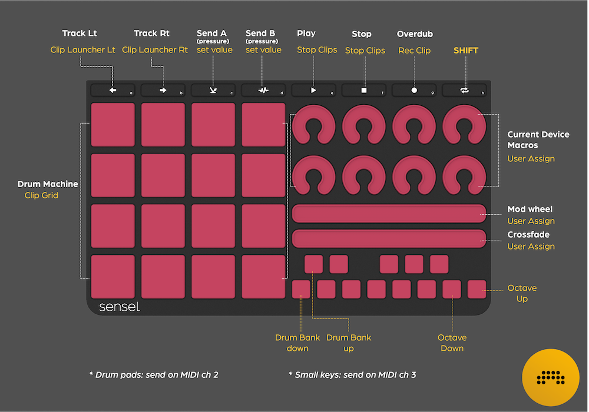
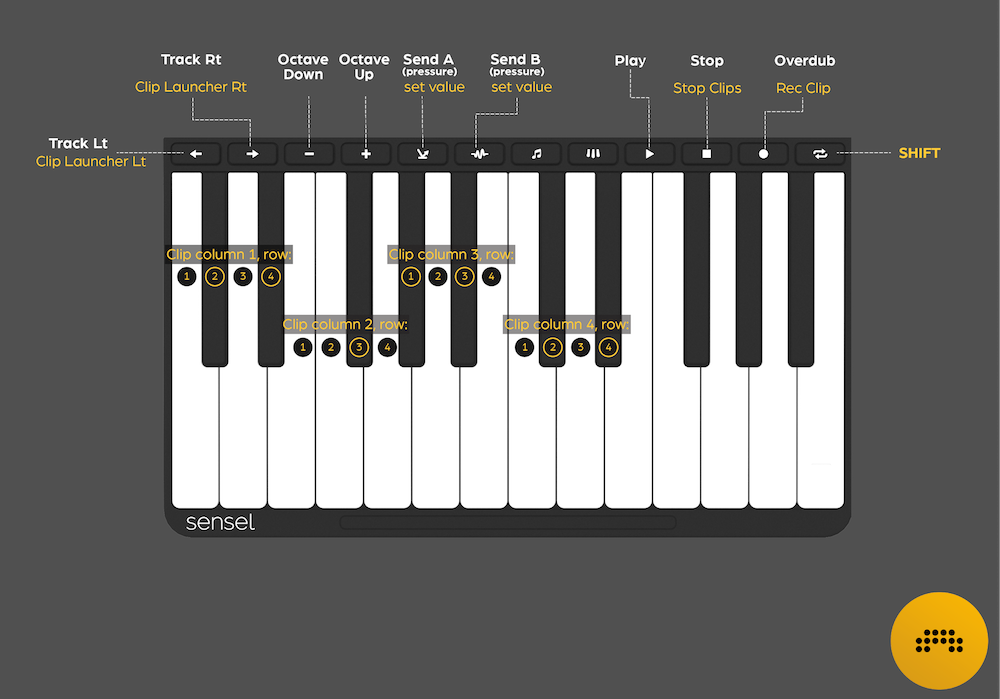
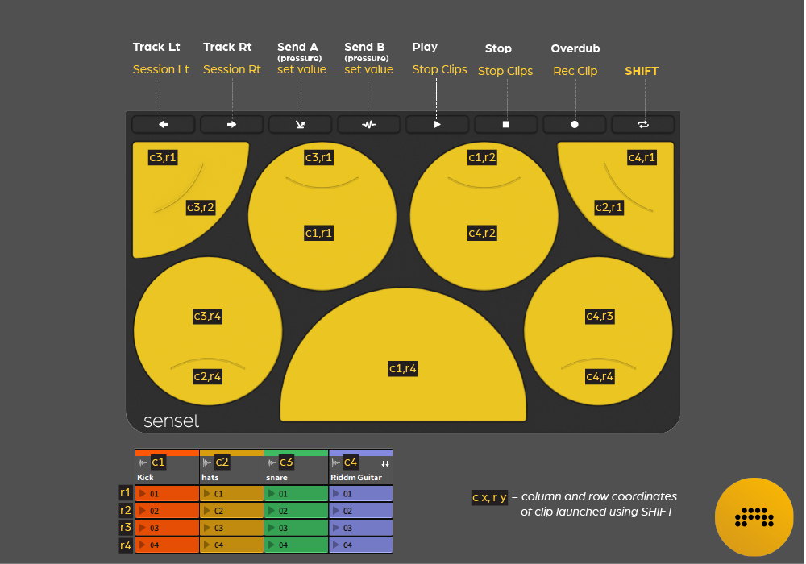

Sensel – Morph



Important note:
For the script to work, you need to load the Bitwig Studio overlays into the Morph using the
SenselApp.
The Overlay maps are installed with the
installer
or available on
github.
Complete documentation is available in the
Sensel guide